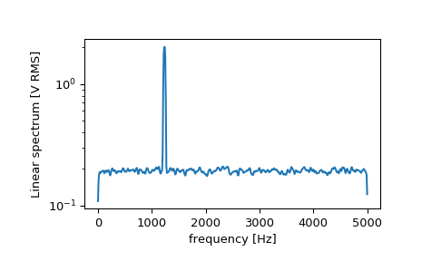

scipy.signal.welch¶
-
scipy.signal.welch(x, fs=1.0, window='hann', nperseg=None, noverlap=None, nfft=None, detrend='constant', return_onesided=True, scaling='density', axis=-1, average='mean')[source]¶ Estimate power spectral density using Welch’s method.
Welch’s method [1] computes an estimate of the power spectral density by dividing the data into overlapping segments, computing a modified periodogram for each segment and averaging the periodograms.
- Parameters
- xarray_like
Time series of measurement values
- fsfloat, optional
Sampling frequency of the x time series. Defaults to 1.0.
- windowstr or tuple or array_like, optional
Desired window to use. If window is a string or tuple, it is passed to
get_windowto generate the window values, which are DFT-even by default. Seeget_windowfor a list of windows and required parameters. If window is array_like it will be used directly as the window and its length must be nperseg. Defaults to a Hann window.- npersegint, optional
Length of each segment. Defaults to None, but if window is str or tuple, is set to 256, and if window is array_like, is set to the length of the window.
- noverlapint, optional
Number of points to overlap between segments. If None,
noverlap = nperseg // 2. Defaults to None.- nfftint, optional
Length of the FFT used, if a zero padded FFT is desired. If None, the FFT length is nperseg. Defaults to None.
- detrendstr or function or False, optional
Specifies how to detrend each segment. If
detrendis a string, it is passed as the type argument to thedetrendfunction. If it is a function, it takes a segment and returns a detrended segment. Ifdetrendis False, no detrending is done. Defaults to ‘constant’.- return_onesidedbool, optional
If True, return a one-sided spectrum for real data. If False return a two-sided spectrum. Defaults to True, but for complex data, a two-sided spectrum is always returned.
- scaling{ ‘density’, ‘spectrum’ }, optional
Selects between computing the power spectral density (‘density’) where Pxx has units of V**2/Hz and computing the power spectrum (‘spectrum’) where Pxx has units of V**2, if x is measured in V and fs is measured in Hz. Defaults to ‘density’
- axisint, optional
Axis along which the periodogram is computed; the default is over the last axis (i.e.
axis=-1).- average{ ‘mean’, ‘median’ }, optional
Method to use when averaging periodograms. Defaults to ‘mean’.
New in version 1.2.0.
- Returns
- fndarray
Array of sample frequencies.
- Pxxndarray
Power spectral density or power spectrum of x.
See also
periodogramSimple, optionally modified periodogram
lombscargleLomb-Scargle periodogram for unevenly sampled data
Notes
An appropriate amount of overlap will depend on the choice of window and on your requirements. For the default Hann window an overlap of 50% is a reasonable trade off between accurately estimating the signal power, while not over counting any of the data. Narrower windows may require a larger overlap.
If noverlap is 0, this method is equivalent to Bartlett’s method [2].
New in version 0.12.0.
References
- 1
P. Welch, “The use of the fast Fourier transform for the estimation of power spectra: A method based on time averaging over short, modified periodograms”, IEEE Trans. Audio Electroacoust. vol. 15, pp. 70-73, 1967.
- 2
M.S. Bartlett, “Periodogram Analysis and Continuous Spectra”, Biometrika, vol. 37, pp. 1-16, 1950.
Examples
>>> from scipy import signal >>> import matplotlib.pyplot as plt >>> np.random.seed(1234)
Generate a test signal, a 2 Vrms sine wave at 1234 Hz, corrupted by 0.001 V**2/Hz of white noise sampled at 10 kHz.
>>> fs = 10e3 >>> N = 1e5 >>> amp = 2*np.sqrt(2) >>> freq = 1234.0 >>> noise_power = 0.001 * fs / 2 >>> time = np.arange(N) / fs >>> x = amp*np.sin(2*np.pi*freq*time) >>> x += np.random.normal(scale=np.sqrt(noise_power), size=time.shape)
Compute and plot the power spectral density.
>>> f, Pxx_den = signal.welch(x, fs, nperseg=1024) >>> plt.semilogy(f, Pxx_den) >>> plt.ylim([0.5e-3, 1]) >>> plt.xlabel('frequency [Hz]') >>> plt.ylabel('PSD [V**2/Hz]') >>> plt.show()
If we average the last half of the spectral density, to exclude the peak, we can recover the noise power on the signal.
>>> np.mean(Pxx_den[256:]) 0.0009924865443739191
Now compute and plot the power spectrum.
>>> f, Pxx_spec = signal.welch(x, fs, 'flattop', 1024, scaling='spectrum') >>> plt.figure() >>> plt.semilogy(f, np.sqrt(Pxx_spec)) >>> plt.xlabel('frequency [Hz]') >>> plt.ylabel('Linear spectrum [V RMS]') >>> plt.show()
The peak height in the power spectrum is an estimate of the RMS amplitude.
>>> np.sqrt(Pxx_spec.max()) 2.0077340678640727
If we now introduce a discontinuity in the signal, by increasing the amplitude of a small portion of the signal by 50, we can see the corruption of the mean average power spectral density, but using a median average better estimates the normal behaviour.
>>> x[int(N//2):int(N//2)+10] *= 50. >>> f, Pxx_den = signal.welch(x, fs, nperseg=1024) >>> f_med, Pxx_den_med = signal.welch(x, fs, nperseg=1024, average='median') >>> plt.semilogy(f, Pxx_den, label='mean') >>> plt.semilogy(f_med, Pxx_den_med, label='median') >>> plt.ylim([0.5e-3, 1]) >>> plt.xlabel('frequency [Hz]') >>> plt.ylabel('PSD [V**2/Hz]') >>> plt.legend() >>> plt.show()